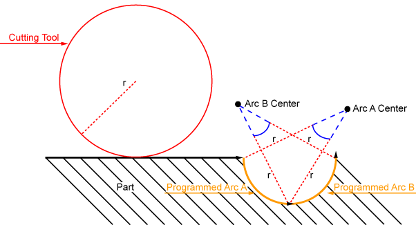

|
Was this information helpful? Yes No |
Copyright |
After cutter radius compensation completed, the arcs do not intersect.
The controller detected a condition where the cutting tool cannot do inside cutting of a CW, CCW, or BEZIER command. This condition is typically caused by a cutting tool that is too large for the shape of the part. This condition can also occur if you specify too few digits to the G2, G3, CW, or CCW command. For more information, refer to Imprecision of Generated Circular Motion.
Correct the programmed moves in your AeroBasic program so that the cutting tool can cut the part. As an alternative, you can use a cutting tool that has a smaller radius.

If you cannot find the cause of this error, or if you tried the recommended solution and receive the error again, record the text of the error message and contact Aerotech
Cutter Overcut No Arc Intersection
|
Was this information helpful? Yes No |
Copyright |
 2001-
2001-